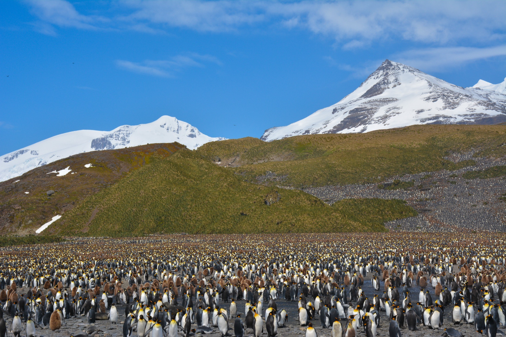

Support the voices.
Help emerging storytellers develop specific stories rooted in their knowledge of a place, species or environmental issue.

Our mission
Follow the Wild’s mission is to inspire the next generation of wildlife storytellers and foster a deeper connection between people and the natural world through education and storytelling.
Our mission
Follow the Wild’s mission is to inspire the next generation of wildlife storytellers and foster a deeper connection between people and the natural world through education and storytelling.
Through scholarships, mentorship and creative resources, we empower emerging creators to share their stories while helping scientists, researchers and wildlife professionals communicate their work to broader audiences.
We also develop accessible educational content and partner with schools and local communities to introduce young people to the wonders of wildlife and the natural world.
Why storytelling
The people who spend time with wildlife and wild places have extraordinary stories to tell. Reaching an audience takes another set of skills: finding the right format, making a clear story and giving people a reason to stay.
Follow The Wild brings those skills together. Our focus is education and public engagement through storytelling, from wildlife photography to creator videos and live conversations.
Our approach
Help emerging storytellers develop specific stories rooted in their knowledge of a place, species or environmental issue.
Connect them with experienced creators who can help with structure, production and reaching an audience.
Create free, accessible wildlife education and bring it to schools, educators and young people.
A complementary role
Scientists, researchers and wildlife professionals do vital work, but don’t always have the time or tools to share it. We plan to pair them with emerging creators who can help document and tell that story.
Creators get hands-on experience in the field. The research and projects reach a wider audience. Wildlife, oceans, forests and climate all belong in that conversation.
Who this is for
You don’t have to be a creator to be part of Follow The Wild. You might love wildlife photography, want to understand a changing landscape, or simply enjoy discovering something you never knew.
Our education and outreach work is built for young people: free content about wildlife and the natural world, and partnerships with local schools, educators and youth organizations. Anyone who wants to learn is welcome.